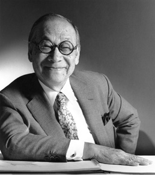

Ieoh Ming Pei
Background, Education and Career
I.M. Pei is renowned as the most successful Asian-American architect of the 20th century. His works still remain landmarks throughout the world in the 21st century, and in some cases have even come to symbolize the cultures of the nations they are located in.
Pei was born in China in 1917 to a wealthy family who had been landowners for generations. The family moved to the Shanghai French Concession when Pei was a child, where he was exposed to Western culture and education. His mother taught him Chinese culture and his grandfather instilled in him the Confucian virtues. An uncle was the proprietor of the famous Lion Grove Garden, whose oddly shaped rocks would later influence his architecture, much like his penchant for truth-seeking gained from Taoism. Leaving for the US at the age of 17 to study architecture at the University of Pennsylvania, Pei later transferred to an engineering program at MIT, only to return to studying architecture there. Pei has ascribed his lifelong aesthetic sensibilities to the sophisticated influence of the upper-echelon Boston community of Cambridge where the MIT campus is located.
After graduating MIT in 1940, Pei worked as an engine draftsman at the Boston engineering firm of Stone & Webster before starting a master’s degree at the Harvard Graduate School of Design. One of his professors at Harvard was a major figure in the modernism movement, Walter Gropius. But Pei doubted that modernism would become an international style, and started to become aware of modernism’s adaptation to cultural diversity.
After graduating and returning to China, Pei decided that knowledge of real estate would be vital, so he returned to the US to work for contracting giant Webb and Knapp. There he started working on urban redevelopment throughout the postwar US, influenced by the work of Mies van der Rohe, who was known for his steel and glass structures. The deteriorating political situation in China that would later lead to the Cultural Revolution made Pei abandon any hope of a life in his homeland, and he acquired US citizenship in 1954. In 1960, he founded I.M Pei & Associates (renamed I.M. Pei & Partners in 1965). In 1967, Pei designed the National Center for Atmospheric Research in Boulder, Colorado. The project’s sculpted, geometric forms were a departure from the Mies van der Rohe style of architecture. The project was a turning point that later brought Pei acclaim as “The Magician of Geometry”.
In 1964, Pei was chosen to design the John F. Kennedy Presidential Library and Museum. Winning this project helped raise Pei’s profile and ultimately led to some of his most famous works. These include the East Building of the National Gallery of Art in Washington, and his design for the glass pyramid created during the renovation of the Louvre Museum in Paris. Pei’s approach of expressing the local country’s history and culture in graceful and sophisticated geometric forms continued in subsequent works such as the Miho Museum, Suzhou Museum, German Historical Museum, and the Museum of Islamic Art in Qatar.
Pei’s achievements have been made possible by a rare ability to uncover the best elements of culture and history. By harnessing the latest technology of the times, Pei has created modernist architecture with flair, and turned it into sophisticated artworks.
Profile
- 1917
- Born in Canton, China
- 1940
- Massachusetts Institute of Technology, B. Arch.
- 1946
- Harvard Graduate School of Design, M. Arch.
- 1948-55
- Webb & Knapp, Inc., Director of Architecture
- 1955
- Pei Cobb Freed & Partners (Formerly I. M. Pei & Partners), Founding Partner
Selected Projects
- 1967
- National Center for Atmospheric Research, Boulder, Colorado
- 1968
- Everson Museum of Art, Syracuse, New York
- 1973
- Herbert F. Johnson Museum of Art, Cornell University, Ithaca, New York
- 1976
- Ralph Landau Chemical Engineering Building,
Massachusetts Institute of Technology, Cambridge, Massachusetts - 1977
- Dallas City Hall, Dallas, Texas
- 1978
- National Gallery of Art / East Building, Washington, D.C.
- 1979
- The John Fitzgerald Kennedy Library, Boston, Massachusetts
- 1981
- Museum of Fine Arts / West Wing, Boston, Massachusetts
- 1989
- Bank of China Tower, Hong Kong
- 1989
- The Morton H. Meyerson Symphony Center, Dallas, Texas
- 1989
- Grand Louvre, Paris, France
- 1990
- Shinji Shumeikai The Joy of Angels Bell Tower, Shiga, Japan
- 1993
- Four Seasons Hotel, New York, New York
- 1995
- Rock and Roll Hall of Fame and Museum, Cleveland, Ohio
- 1997
- Miho Museum, Shiga, Japan
- 2001
- Bank of China Head Office, Beijing, China
- 2003
- Deutsches Historiches Museum Zeughaus, Berlin, Germany
- 2006
- Musée d’Art Moderne, Kitchberg, Luxembourg
- 2006
- Suzhou Museum, Suzhou, China
- 2008
- Museum of Islamic Arts, Doha, Qatar
- 2012
- Chapel, Miho Institute of Aesthetics, Shiga, Japan
Selected Awards
- 1976
- The Thomas Jefferson Memorial Medal for Architecture
- 1979
- The American Institute of Architects − Gold Medal
- 1983
- The Pritzker Architecture Prize
- 1989
- Praemium Imperiale for lifetime achievement in architecture (Japan)
- 2003
- Smithsonian Institution – National Design Award
- 2006
- Erwin Wickert Foundation – Orient und Okzident Preis